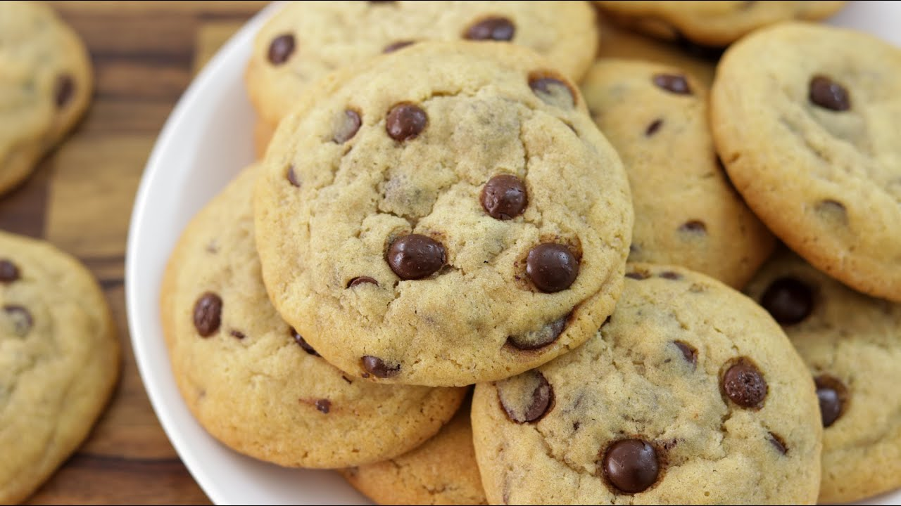

Cookies Recipe

Description
There's nothing like walking into Grandma's
house and being greeted by the sweet scent
of freshly baked cookies. Allrecipes community
members have shared plenty of vintage cookie
recipes from their grandmas' kitchens through
the years — and we've rounded up some of the
best ones right here. Whether you're in the mood
for an old-fashioned idea that has stood the test
of time or a fun twist on an old favorite, you'll
find a new family
tradition in this collection of our best
Grandma-approved cookies.
Ingredients
- 2 cups sifted all-purpose flour
- 1 tablespoon ground ginger
- 2 teaspoons baking soda
- 1 teaspoon ground cinnamon
- ½ teaspoon salt
- ¾ cup shortening
- 1 cup white sugar
- 1 egg
- ¼ cup dark molasses
- ⅓ cup cinnamon sugar
Steps
- Preheat the oven to 350 degrees F (175 degrees C).
- Sift flour, ginger, baking soda,
cinnamon, and salt into a
mixing bowl. Stir the mixture
until blended, then sift a
second time into another bowl.
- Place shortening in a mixing bowl and beat until creamy.
Gradually mix in white sugar. Beat in egg and dark
molasses until light and fluffy. Sift 1/3 of the flour
mixture into the shortening mixture; stir
to thoroughly blend. Sift in the remaining flour mixture
and mix together until a soft dough forms.
- Pinch off small amounts of dough and roll them into
1-inch-diameter balls between your hands.
Roll each ball in cinnamon sugar, then place
2-inches apart on an ungreased baking sheet.
- Bake in the preheated oven until tops are rounded and
slightly cracked, about 10 minutes. Cool cookies on a
wire rack. Store in an airtight container.